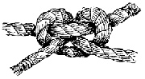

UX Design, Well Rounded
I'm Chris Eichler, a UX Designer with experience in web development, product, publishing, and photography.
All things visual feel very natural to me, after art school and many years doing art and photography. For a publishing house and for individual clients I've done layout, design, and editing. Attention to detail is a strong suit for me. In the past few years I've gotten into the web in a big way, working for a year as a developer, and then working on a product team for a successful NY startup.
I decided that UX was the field in which I could tie together all my strengths.
I'm curious about almost everything and I like diving deep into users' experiences of the world. Shoot me an email if you'd like to talk!
chriseichler@gmail.com
This site designed and built by me.